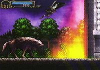

|


Review
Game Type: 2D Platform
A typical Castlevania game - if there is such a thing. You play as
Alucard (cool!), the vampire from Castlevania III. Obviously, since this
isn't a Belmont, you won't have the traditional whip. (Except in the
intro, where you play as Richter from the first Dracula X.) Alucard uses
rapiers, dirks, and shields in addition to all the usual special
items like the boomerang and holy water. This is more an adventure than
an action game; as in Metroid you must travel all over the castle,
searching for items to allow you to progress past various obstacles. For
each monster you kill you gain experience which will give you more strength
and stamina among other things.
Gameplay: 60/100
Dracula X could have been a lot more fun than it turned out. The
control is excellent, there are lots of moves including a reverse slide
and blocking with a shield, and the boss designs are decent. But Konami
just had to turn it into an adventure/RPG. Most enemies take anywhere from
five to a dozen hits to kill when you first encounter them, meaning they
can plow through all your attempts to defend yourself and hit you anyway.
Trekking back and forth and back and forth across the castle to find
different items gets to be a pain eventually. (I was horrified, not
pleased, to learn there was a second castle after I beat the first.)
Graphics: 80/100
The backgrounds are bland and dark but the graphics are amazing in
every other aspect. The animation on Alucard is incredibly smooth. Every
enemy seems to have its own way of dying, usually in a fountain of blood
or fire. The special effects are some of the best ever seen on the
Playstation or any other system. Too bad about those backgrounds, though;
they make an otherwise visually spectacular game look decidedly
sixteen-bit.
Sound: 90/100
Those who remember Castlevania IV's jazzy soundtrack won't be
disappointed, but DX's music is also influenced by R&B, classical, and even
heavy metal (not to mention those rockin' harpsichord tunes). The sound
effects are excellent as well. There's even speech for the cinemas by
great voice actors (all in Japanese, of course; let's hope the English
voice actors are equally good).
Overall: 70/100
Even Super Metroid wore thin for me after a while, but if you're still
playing that you won't be disappointed with Dracula X. I for one find
DX frustrating and I hope to God the next Castlevania is pure action. It
certainly is impressive at first, though, and the graphics and music are
great throughout. Import it if you have to be the first kid on the
block to own it, but I suggest waiting for its U.S. release on October 1.
Better reserve a copy in advance; the fact that I don't like it won't
stop it from being a complete sellout.
|